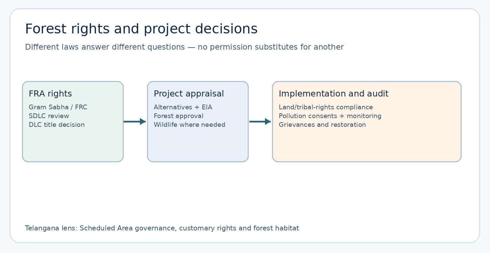
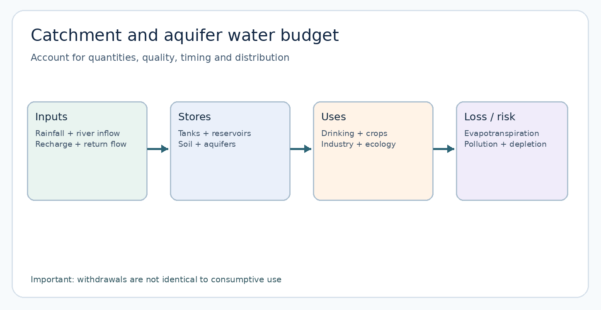
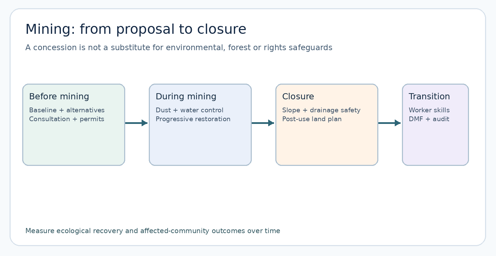

Natural Resources: Forest Resources and Commercialisation; Forest Laws versus Forest Dwellers; Surface and Groundwater; Land for Food, Feed, Fuel and Fibre; Mining and Environment; Sustainability.
Production date: 24 October 2026. Status: expanded original draft; not independently academically approved. All MCQs and mains questions are original practice, not official PYQs.
Paper IV · Unit III · Topic 2 — Natural Resources. Working syllabus transcription from the previous verified checkpoint: forest resources, commercialisation of forests and forest laws versus forest dwellers; surface and groundwater and competing demands; land for food, feed, fuel and fibre; mining and environment; sustainability of natural resources. Verification limitation: the exact line from the original commission-hosted notification has not been independently reproduced in this run. The chapter maps the stated elements without representing this working transcription as a newly authenticated quotation.
| Syllabus demand | Main sections | Examination application |
|---|---|---|
| Nature and sustainability of resources | 1, 14–16 | Stocks/flows, commons, critical natural capital |
| Forest resources and commercialisation | 2–3 | Ecosystem services, timber and non-timber value chains |
| Forest law versus forest dwellers | 4–6 | 1927 law, 1980/2023 forest framework, FRA, PESA, land-transfer rules |
| Surface water and competing demands | 7, 9 | Godavari/Krishna, tanks, drinking, irrigation, ecology |
| Groundwater and competing demands | 8–9 | Aquifer science, extraction stage, CGWB/Telangana data |
| Land: food, feed, fuel, fibre | 10–11 | Soil, land-use conversion, crop choices and water rebound |
| Mining and environment | 12–13 | MMDR, EIA, cumulative effects, closure, Singareni |
| Telangana applications and integration | 16 | Forest corridors, coal, Musi, tank/dryland nexus |
Summary. Natural resources provide products, livelihoods and ecological functions; market value alone does not capture their full contribution. Forest commercialisation may raise income but can marginalise customary users and encourage overharvesting. Forest conservation law, FRA rights, Scheduled Area protections and environmental clearance operate in overlapping yet distinct domains. Water management requires basin accounting, aquifer assessment and explicit allocation among households, agriculture, industry and ecosystems. Land-use competition among food, feed, fuel and fibre is intensified by urbanisation, mining and energy projects. Mining brings revenue and jobs while generating landscape damage, water and health risks; safeguards and closure finance must begin early. Sustainable governance combines science, rights, transparent institutions, enforcement, economic incentives and monitoring, with special attention to Telangana's forests, tanks, hard-rock groundwater and coal belt.
How to study. Read quick revision first; then sections 1–16; interpret the three diagrams; solve original MCQs before reading explanations; plan and write six mains answers; verify dated figures from the source register. No question is presented as an official previous-year question without a traceable original paper and question number. Publication status: expanded draft, not independently academically approved.
Stock, flow, quality, access. A natural resource is a material, energy flow or ecological service. A renewable stock can be exhausted if extraction exceeds regeneration. A non-renewable mineral stock is finite on human time scales. Ecological services such as infiltration and habitat cannot always be replaced by cash compensation.
Open access versus commons. Open access means ineffective exclusion/rules; common property can have strong collective management. The tragedy-of-commons model is not proof that communities always overexploit. Gram Sabha and local monitoring may support sustainable commons.
Forest-cover terminology. FSI's remotely assessed forest cover differs from legally recorded forest area and tree cover. ISFR 2023 reports Telangana forest cover 21,179.04 sq km and tree cover 3,517.66 sq km; categories are distinct, not proof of forest quality. Forest cover can include plantations; ecological integrity needs separate assessment.
Forest products. Timber, bamboo, tendu, honey, gums, fodder and medicinal plants have different regeneration and harvesting requirements. Value-chain fairness involves rights, collection, grading, storage, transport, prices, women's participation and sustainable quotas.
Forest law. Indian Forest Act 1927 regulates forest classification and produce. The 1980 forest-conservation statute, renamed under the 2023 amendment, controls specified forest land diversion and related actions; the 2023 amendment commenced 1 December 2023. Wildlife, EIA, forest and pollution approvals are distinct.
Forest Rights Act 2006. Recognises individual, community and community forest resource (CFR) rights. Gram Sabha/FRC → SDLC → DLC; FRA rights are not a blanket right to clear new forest land. Ministry of Tribal Affairs is nodal ministry. Telangana Ministry booklet data as of June 2023: 2,06,984 claims received, 97,536 titles distributed; do not label these 2026 counts.
PESA and Scheduled Areas. PESA 1996 concerns Scheduled Area local self-governance; FRA concerns specified forest rights. Telangana Scheduled Area land-transfer protections are a separate layer. State Panchayat Raj Act 2018 addresses minor minerals and water bodies in Scheduled Areas; verify applicable provision and village status.
Surface-water balance. Basin inflow, evaporation, storage, consumptive use, return flows and environmental flows matter. Withdrawal is not identical to consumption. More irrigation efficiency may cause expansion of irrigated area and fail to save basin water.
Groundwater. Hard-rock aquifers have discontinuous weathered/fractured storage. Extraction stage = annual extraction / annual extractable groundwater resources × 100. It does not mean the fraction of all underground water already used. CGWB publishes 2025 national and Telangana dynamic-resource assessments.
Telangana water-level snapshot. Telangana Ground Water Department portal reports May 2026: 9.29 m below ground level versus May 2025: 10.04 m; these are state dashboard averages, not a district-specific aquifer recovery finding. Groundwater quantity and potability must be assessed separately.
Four Fs. Food = human crops; feed = fodder and grazing; fuel = biomass/energy; fibre = cotton and industrial crops. Add housing, infrastructure, mining and conservation. A land decision needs soil, water, livelihood and rights accounting, not just market price.
Mining. MMDR Act 1957 governs mineral concessions, but a lease is not environmental clearance. EIA Notification 2006 (amended through July 2026) and PARIVESH support appraisal. Forest, wildlife, pollution, FRA/PESA and land approvals may also apply. DMF should benefit mining-affected people; verify use, not only collections.
Mining impacts. Dust, noise, runoff, groundwater disturbance, waste rock, biodiversity fragmentation, displacement, worker health and post-closure risk. Opencast and underground mines have different impacts. Progressive rehabilitation and financial assurance matter.
Sustainability principles. Precaution for serious uncertainty; prevention for known harms; polluter-pays for cost allocation; intergenerational equity; critical natural capital; resource efficiency; community participation. Compensatory afforestation does not automatically replace an ancient forest or resolve forest rights.
Telangana cases. Kawal/Amrabad (habitat and rights), Singareni (coal, employment and closure), Musi (quality, sewage and floodplain), Mission Kakatiya (tank systems), hard-rock borewells (recharge/extraction), dryland farming (crop-risk-water nexus).
High-scoring mains template. Definition → mechanism → legal/institutional basis → Telangana example → competing viewpoints → feasible package → indicators → balanced conclusion. Avoid invented current numbers, false legal equivalence and unverified official PYQ labels.
Natural resources are the materials, energy flows and ecological functions that societies use to sustain life and production. A forest provides timber and bamboo, but also moderates runoff, holds soil, stores carbon and supports pollination. A river supplies irrigation and drinking water, but its channel also transports sediment, supports fisheries and sustains floodplains. This distinction between extractive products and ecological services is fundamental: an accounting system that values only timber sales or irrigation output can report a gain while society loses flood protection, biodiversity or safe drinking water. Natural-resource economics therefore asks who gains from extraction, who bears its costs, whether the stock can recover and which rights govern access.
Renewable resources regenerate through biological or hydrological processes, but are not inexhaustible. Fish stocks can collapse if catch exceeds recruitment; a hard-rock aquifer can be depleted faster than recharge; a forest converted to a quarry cannot regenerate merely because its trees were once renewable. Non-renewable resources such as coal, limestone and metallic ores are geological stocks that do not regenerate on human time scales. Some materials can be recycled, but recycling does not reverse the local landscape damage caused by mining. A useful analytical distinction is between stock (quantity at a time), flow (annual extraction or recharge), quality (fitness for use) and access (who may lawfully benefit).
The familiar 'tragedy of the commons' is not a claim that all common property must fail. An open-access resource lacks effective exclusion or collective rules; a common-property resource may be governed by strong local institutions. Village grazing commons, community forest resources and irrigation tanks can be managed sustainably through agreed access, monitoring, sanctions and conflict resolution. State ownership likewise does not automatically guarantee protection. In Telangana, a village tank links catchment land use, silt, upstream encroachment, local agriculture and downstream livelihoods. Governance must address that whole system, not only the ownership label on the tank bed.
Exam mechanism: begin with a resource's ecological function, identify the extraction pressure, map the affected users, explain the legal authority and propose measurable indicators. For groundwater, for example, indicators include annual recharge, annual extraction, water level, fluoride/nitrate quality, well failure and the distribution of access across small and large farmers. A policy that improves one indicator but worsens the others is not necessarily sustainable.
Forests are dynamic ecosystems of trees, shrubs, herbs, soil organisms, wildlife, water and climatic interactions. Their services include provisioning products (fuelwood, fodder, bamboo, honey, medicinal plants), regulating functions (carbon storage, local cooling, erosion control, water infiltration), cultural values (sacred landscapes and recreation), and habitat for biodiversity. Forests do not simply 'produce oxygen': they are living carbon-and-water systems whose functions depend on age, species diversity, soil, disturbance and landscape connectivity. A dense monoculture plantation may increase visible tree cover while offering fewer habitat niches than a native mixed forest.
India's Forest Survey of India distinguishes forest cover measured through remote sensing from recorded forest area defined by legal/administrative records, and tree cover outside mapped forest-cover patches. A forest-cover increase cannot, by itself, establish that natural forests, biodiversity or forest-dweller rights improved. The 2023 India State of Forest Report reports Telangana forest cover of 21,179.04 square kilometres and tree cover of 3,517.66 square kilometres; these are separate categories. They must not be added and called 'legal forest land'. Earlier ISFR series used somewhat different state geographical-area baselines, so comparisons require consistent methods and boundaries.
The ecological geography of Telangana is varied: dry deciduous landscapes in Adilabad/Kawal, the Nallamala-Amrabad landscape, riparian corridors and urban/peri-urban tree cover serve different purposes. Kawal and Amrabad are tiger-reserve landscapes with conservation priorities and resident or neighbouring communities. Their governance cannot be reduced to a uniform ban on human activity. Fire management, invasive species, wildlife movement, non-timber forest produce and grazing pressures require location-specific evidence. Connectivity matters because a road or mine may fragment a habitat even when its direct footprint appears small.
The choice of forest-restoration method is therefore consequential. Assisted natural regeneration, control of invasive plants, soil-moisture conservation and protection of native seed sources may outperform plantation targets in a suitable site. A plantation's survival rate, species mix and ecological outcomes are more informative than saplings planted. Compensatory afforestation may offset some tree loss but cannot automatically replace an old forest's soil, cultural landscape, ecological continuity or community rights. Mains answers should distinguish forest area, forest cover, forest quality and forest governance.
Commercialisation occurs when forest products are increasingly produced and allocated through market demand, state contracts and industrial supply chains. Colonial forestry emphasised railway sleepers, shipbuilding timber, revenue and state control over land classified as forest. This often restricted customary shifting cultivation, grazing and access to fuelwood or forest produce. The Indian Forest Act, 1927 consolidated a system of reserved, protected and village forests and powers concerning transit and forest offences. Historical administration varied by region, and Hyderabad State had its own institutional trajectory; avoid presenting all Telangana forest history as identical to British provinces.
Contemporary commercial demand extends beyond timber. Bamboo, tendu leaves, gum, honey, medicinal plants, paper pulp, tourism and carbon projects can generate income. Yet gross revenue does not show who captures value. A forest collector may receive a low farm-gate price while contractors capture grading, transport and market margins. An effective minor-forest-produce strategy combines secure rights, aggregation, transparent weighing, storage, processing, working capital, safety and reliable buyer access. Market access without community bargaining power can intensify extraction and dependency.
The key debate is not simply 'markets versus forests'. Markets can reward sustainable harvesting when quantities are monitored, products are traceable and producers retain a fair share; they can also reward rapid depletion when enforcement is weak or tenure is insecure. Certification and eco-labelling may help, but impose compliance costs that small producers cannot always bear. Public procurement and minimum support mechanisms may stabilise incomes, but should not encourage harvest beyond ecological limits. Distinguish the ownership of minor forest produce under the Forest Rights Act from a trader's purchase agreement; purchasing a product does not extinguish the underlying community right.
Telangana's tribal communities in forested districts offer a useful case for a full value-chain answer. Explain the resource and season, customary collection, legal rights, procurement agency/cooperative, grading and processing, ecological harvest protocol and grievance channel. Consider gender: women may collect, process and sell products yet lack formal membership or control over payment accounts. Sustainable commercialisation therefore needs both ecological monitoring and distributive safeguards.
The Indian Forest Act, 1927 and state forest laws regulate forest classification, produce, transit and offences. The 1980 forest-conservation statute, now styled the Van (Sanrakshan Evam Samvardhan) Adhiniyam following the 2023 amendment, restricts specified non-forest use and other changes without required central approval. The 2023 amendments altered scope and certain exemptions, prompting debate over infrastructure needs, legal clarity and the risk that excluded areas receive weaker protection. An exam answer must distinguish what the amended statute says from the separate question of whether a particular project's facts fall within it. The Ministry's 2024–25 annual report confirms that the amendment took effect on 1 December 2023.
Wildlife (Protection) Act, 1972 mechanisms and protected-area management are a different layer; they do not automatically disappear because forest-diversion approval exists. The Environment (Protection) Act, 1986 and EIA Notification, 2006 may require environmental clearance for scheduled projects. Pollution-board consents under the Water and Air Acts are further instruments. The presence of a clearance on PARIVESH is evidence of an administrative decision, not proof that all environmental conditions are being met. Environmental appraisal should consider alternatives, cumulative effects, public consultation where legally required, mitigation, rehabilitation and post-clearance monitoring.
For mining in a forest landscape, approvals are not interchangeable. A mineral concession under mining law, environmental clearance, forest approval when applicable, wildlife-related permissions where required, pollution-board consent and land/tribal-rights compliance answer different legal questions. A single-window industry portal can coordinate applications but cannot erase statutory safeguards. Likewise, 'compensatory afforestation paid' is not equivalent to 'forest rights settled'. The proper sequence depends on the law and project facts; a student should not invent a universal one-line checklist that bypasses Gram Sabha or land-title issues.
Telangana applications include infrastructure and quarry proposals in ecologically sensitive or Scheduled Area settings. A defensible appraisal maps land status, legal forest boundaries, biodiversity, FRA claims, tribal land protections, water sources, alternatives, and rehabilitation costs. The decision may be approval with enforceable conditions, redesign, relocation or rejection. Every option should be explained through evidence and law, not political slogans.
Forest-dwelling Scheduled Tribes and other traditional forest dwellers have long relied on forests for residence, cultivation, grazing, fishing, gathering and cultural identity. Colonial and later forest classifications often failed to record customary rights; legal invisibility made livelihoods vulnerable to eviction or criminalisation. The Scheduled Tribes and Other Traditional Forest Dwellers (Recognition of Forest Rights) Act, 2006—commenced in 2007, with 2008 Rules subsequently amended—was enacted to recognise and vest specified rights and address historical injustice. It is not a blanket right to clear any forest land after its cut-off date.
The Act recognises individual forest rights (IFR), community rights over specified uses, and community forest resource (CFR) rights to protect, regenerate, conserve and manage traditionally used community forest resources. Distinguish CFR management rights from merely collecting minor forest produce. A Gram Sabha initiates and verifies claims with its Forest Rights Committee; the Sub-Divisional Level Committee examines claims; the District Level Committee decides claims and issues titles; state monitoring arrangements oversee implementation. Other traditional forest dwellers have a separate three-generation (75-year) residence/dependence test linked to the statutory cut-off. Do not collapse eligibility categories.
The Act combines rights and conservation duties. Recognition can improve stewardship because users gain a stake in long-term resource health, but outcomes depend on accurate mapping, fair claim adjudication, functioning Gram Sabhas, protection from elite capture and coordination with forest and revenue departments. Conservationists worry that poorly implemented recognition can facilitate encroachment; rights advocates argue that insecure tenure and exclusionary conservation can worsen both injustice and ecological management. The productive response is transparent evidence, clear boundaries, participatory monitoring and lawful dispute resolution.
A Ministry of Tribal Affairs Telangana booklet reported, as of June 2023, 2,06,984 FRA claims received and 97,536 titles distributed, with a much smaller number of community titles than individual titles. These are historical administrative counts, not a current 2026 outcome or a measure of rights quality. Their interpretation requires checking rejected/pending claims, claim type, area, appeal process and whether CFR rights were actually mapped and operationalised. An answer should evaluate substantive control, not only certificates printed.
The Fifth Schedule framework applies to notified Scheduled Areas and provides a constitutional context for protective administration. The Panchayats (Extension to Scheduled Areas) Act, 1996 (PESA) adapts Panchayati Raj governance to Scheduled Areas, recognising the role of Gram Sabhas in customary resources and consultation/decision processes specified by law. The precise operation of PESA depends on state legislation and rules. It should not be confused with the Forest Rights Act: PESA concerns self-government in Scheduled Areas; FRA recognises forest rights in eligible forest lands, including beyond Scheduled Areas.
Telangana's Scheduled Area land-transfer protections, commonly associated with the Andhra Pradesh Scheduled Areas Land Transfer Regulation, 1959 as amended by Regulation 1 of 1970, address alienation of tribal land. They operate alongside but are not replaced by FRA titles. The Telangana Panchayat Raj Act, 2018 includes Scheduled Area provisions concerning minor water bodies, minor minerals, minor forest produce and preventing land alienation. Section-specific applications need current legal-text review and factual attention to the status of the village and mineral type.
In a hypothetical quarry proposal near a Scheduled Area hamlet, four questions arise: who holds the land and customary rights; what does the mineral concession permit; which Gram Sabha consultation or recommendation is legally required; and what forest, environmental and rehabilitation approvals apply? An official cannot infer community consent from a meeting photograph. Minutes, attendance, language accessibility, dissent, affected habitation boundaries and disclosure of impacts matter. A forest title also does not itself grant a mining concession.
Rights-based governance can be institutionally demanding. Village assemblies need maps, legal assistance, accessible records, women’s participation and mechanisms for resolving inter-village boundaries. Overlapping departmental jurisdictions can delay decisions, but speed without due process produces later litigation and distrust. A strong mains answer treats procedural justice as part of ecological sustainability, not an obstacle to it.
Institutional distinction and examination test. Before citing a Gram Sabha decision, establish whether the settlement is in a constitutionally notified Scheduled Area and identify the particular power being exercised. PESA's Scheduled Area local-governance framework and FRA's recognition of forest rights are not synonyms. A minor-mineral concession, a land transfer, a community forest resource management decision and a public consultation under environmental law can involve different authorities and legal thresholds. The responsible answer maps the land parcel, claimant category, village institution, statute and stage of decision; it does not treat one meeting or one clearance as a universal substitute for every other legal requirement. [S07, S04–S05]
Surface water includes rivers, streams, lakes, reservoirs, tanks and wetlands. Rainfall becomes runoff, soil moisture, infiltration, evapotranspiration and storage; the proportions vary with geology, slope, land cover and storm intensity. A basin is the area draining to a common outlet, and basin boundaries often cross administrative borders. Telangana lies in the Godavari and Krishna systems, with tributaries such as Manjira, Pranhita and Musi. A reservoir's apparent capacity does not equal annual reliable yield: inflow variability, evaporation, siltation, environmental-flow needs and operational rules matter.
Demand is heterogeneous. Drinking water requires high reliability and safe quality; irrigation often dominates consumptive withdrawals; industry needs process water and may create effluent; ecosystems need seasonal flow pulses and connectivity; fisheries and downstream users depend on timing, not only annual volume. Allocation debates therefore concern reliability, priority, water quality, inter-state obligations and drought burden sharing. 'Unused' water on a hydrograph may sustain wetlands, sediment transport or downstream communities. Conversely, a dam can reduce seasonal shortages while displacing settlements and altering downstream ecology.
Water accounting distinguishes withdrawal (water taken from source), consumptive use (not promptly returned), return flow (which may be polluted) and storage. Drip irrigation may reduce field withdrawals but not always save basin-scale water if farmers expand irrigated acreage or previous seepage recharged aquifers. This is the rebound effect and illustrates why technical efficiency needs allocation rules. For urban Hyderabad, leakage reduction, wastewater reuse, lake protection and stormwater management may jointly improve supply and flood resilience.
Telangana's traditional tanks form networks in which feeder channels, catchment encroachment, silt, sluices and command-area distribution are interdependent. Mission Kakatiya is best assessed through actual storage recovery, tail-end irrigation, groundwater response, sediment disposal and maintenance—not only the number of tanks listed as restored. Inter-state river disputes require legal allocation, project appraisal, data transparency and ecological considerations; they cannot be settled by treating every proposed lift scheme as automatically productive.
Groundwater occupies pore spaces and fractures beneath the land surface. In Telangana's extensive hard-rock terrain, weathered zones and fractures store and transmit water unevenly; drilling deeper does not guarantee a productive borewell. Recharge depends on rainfall intensity, soil infiltration, land cover, topography, tanks and geology. The water table can recover after monsoon yet remain in long-term decline under intensive pumping. A single observation well cannot represent an entire mandal. Groundwater quality is equally important: fluoride, nitrate, salinity or industrial contaminants may make physically available water unsafe.
The stage of groundwater extraction is annual groundwater extraction divided by annual extractable groundwater resources, expressed as a percentage. This is not the percentage of all underground water 'used up'. Assessment units are classified safe, semi-critical, critical or over-exploited using prescribed criteria; classification should be attributed to the year and spatial unit. CGWB's 2025 national compilation, jointly prepared with states, provides the current annual resource-assessment framework. The Telangana 2025 dynamic groundwater report is listed separately by CGWB, so a national extraction percentage must not be substituted for Telangana's.
The Telangana Ground Water Department's public dashboard reports May 2026 average depth of 9.29 metres below ground level, compared with 10.04 metres in May 2025. These are monthly statewide reported averages, not proof that every local aquifer recovered. The same portal displays a decadal average of 11.39 metres below ground level; without checking well coverage and rainfall, one should not attribute the difference solely to a policy. Water-level depth (metres below ground level) is not a water-volume measure.
Policy tools include aquifer mapping, registration and metering where legally applicable, restrictions in stressed units, crop diversification, recharge structures, tank maintenance, wastewater reuse, and electricity-pricing/irrigation incentives. Demand management often matters more than creating additional recharge pits: a highly water-intensive crop can erase gains from recharge. Small farmers face unequal borewell risks; a policy that simply bans pumping without viable livelihoods or drinking-water safeguards can transfer costs to the vulnerable.
Water conflict has several dimensions: competition over volume, timing, quality, infrastructure finance and decision authority. Upstream irrigation may reduce downstream flows; an industrial estate may withdraw modest quantities but discharge harmful effluent; urban expansion may cover recharge areas; a wetland may lose seasonal inflows even while total annual basin storage rises. Identifying the exact conflict prevents simplistic 'agriculture versus city' narratives. Each use has legitimate claims, but the strength of a claim depends on human need, legal allocation, economic value, ecological minimums and available substitutes.
A rational hierarchy begins with safe drinking water and basic sanitation as essential services, while recognising that food security, livelihoods and ecological flows are not optional leftovers. Integrated water-resources management seeks basin-scale coordination, transparent data, demand forecasts, water-quality control and stakeholder participation. It can fail when basin institutions lack enforcement, when water-rights records are incomplete or when political incentives favour new projects over maintenance. Pricing can reduce waste, but volumetric tariffs are difficult where wells are unmetered and must include equity protections.
In Telangana, the Musi illustrates the difference between water quantity and quality: treated wastewater reuse, sewer interception, industrial discharge control and floodplain restoration are complementary rather than interchangeable. For the Godavari and Krishna systems, the answer should separate hydrology, legal inter-state allocation and project-specific benefit-cost appraisal. An inter-state dispute does not establish that a particular dam is ecologically sound, nor does ecological criticism settle a water-sharing entitlement.
A practical district-level response is to publish a water budget: expected rainfall and inflows, current storage, withdrawals by sector, groundwater condition, drinking-water reliability, wastewater return flows and ecological needs. Include drought triggers, conflict-resolution mechanisms and independent audits. This makes trade-offs visible and prevents inflated claims that a single engineering intervention has 'solved' scarcity.
Policy benchmark and conflict-resolution sequence. The Government of India's National Water Policy (2012) explicitly prioritises safe drinking water and sanitation, food security and livelihoods dependent on agriculture, while also assigning high priority to minimum ecosystem needs and recommending basin/sub-basin management. This is a policy framework, not a self-executing tribunal award or a quantified Telangana allocation. A district administrator should first separate reliable potable supply from total withdrawals, then identify seasonal ecological flow constraints, distinguish consumptive use from return flows, and publish competing demands before choosing a supply expansion. Where wastewater reuse is proposed, specify treatment quality, end-use suitability, monitoring and who bears the cost. An upstream irrigation saving cannot be counted twice as downstream water unless return-flow and consumption effects are modelled. In a drought, transparent triggers and a grievance forum are more defensible than ad hoc claims that every use has absolute priority. [S24]
Land is simultaneously a production input, ecological substrate, location for settlement and bearer of cultural and property rights. The familiar 'four Fs'—food, feed, fuel and fibre—compete for soil, water, nutrients and market incentives. Food crops support human consumption; feed crops and grazing support livestock; fuel includes biomass and bioenergy crops; fibre includes cotton and other industrial crops. Land is also demanded by housing, roads, industry, mining, renewable-energy projects and conservation. These uses cannot be compared only by price per acre because water use, employment, ecosystem services and displacement differ.
The food-versus-fuel debate becomes acute when irrigated food-producing land is converted to dedicated biofuel crops, but the outcome depends on feedstock, yield, by-products and whether degraded land can be restored. Similarly, cotton provides fibre and farm income, yet pesticide use, irrigation and price volatility create risks. Livestock grazing can maintain some grassland ecosystems when well-managed but can degrade commons under unmanaged pressure. An integrated landscape strategy protects productive soils, common grazing routes, wetlands and village access while allowing appropriately sited infrastructure.
Soil degradation includes erosion, salinisation, nutrient depletion, compaction, contamination and loss of organic carbon. Its causes include cultivation on slopes without protection, excessive tillage, poor drainage, mining spoil and untreated wastewater. Dryland Telangana faces moisture stress and rainfall variability; high-input crop expansion can raise yields in good years while exposing farmers to debt in drought years. Soil health management therefore combines crop rotation, organic matter, contour bunding, mulching, drainage, balanced nutrients and context-specific irrigation.
Land-use planning requires cadastral records, ecological sensitivity maps, groundwater assessment, transport access, social impact and community consultation. A solar park may reduce fossil-fuel dependence but can still displace pastoral access; a mine may provide jobs but irreversibly remove soil profiles. The right comparison is among feasible sites and designs, including the no-project alternative and long-term restoration liabilities. Telangana's land decisions should explicitly protect Scheduled Area rights and common lands, not merely privately titled plots.
Agricultural land and water decisions are linked through crop physiology, procurement incentives, energy subsidies and risk. Paddy needs sustained water availability under common cultivation methods, while millets and pulses may be more compatible with dryland conditions, though local yield and market realities matter. Farmers do not choose crops solely by water efficiency: minimum support procurement, labour, machinery, price stability, household consumption and access to buyers determine the feasible choice. Advising diversification without assured markets or extension services may increase farmer risk.
A field-level water-saving technology can produce rebound effects. If drip irrigation reduces withdrawals per hectare but allows expansion of irrigated area, basin extraction may remain unchanged. Conversely, crop switching can lower consumptive use but require new storage, processing and marketing networks. Water productivity should be measured as value or nutrition per unit of consumed water, not only yield per irrigation event. The choice between food, feed, fuel and fibre is therefore an institutional question as well as an agronomic one.
Telangana's tank-command areas, borewell-dependent fields and rainfed uplands face distinct policy needs. Tank desilting and feeder-channel maintenance may improve surface storage and nearby groundwater, but water distribution must reach tail-end farmers. Rainfed areas need drought-tolerant seed, soil moisture conservation, crop insurance and market access. Borewell zones need recharge protection and pumping management. A district strategy should identify the dominant constraint before funding infrastructure.
The distributive dimension is crucial. Large landowners may have several borewells and access to credit; tenants and marginal farmers may rely on purchased water or rain. A water-saving subsidy that requires large upfront investment can worsen inequality. Cooperatives, farmer-producer organisations, targeted credit and shared equipment may broaden access, provided governance is transparent. Environmental sustainability is more durable when livelihood alternatives are credible.
Recent Telangana-linked research and implementation test. ICAR-CRIDA's 23–27 February 2026 training for farmers from Mancherial district covered in-situ and ex-situ moisture conservation, farm ponds, micro-irrigation, cropping-system intensification and contingency planning. This is evidence of the institute's training content, not evidence that all participating farms achieved measured yield or groundwater gains. ICAR-IIMR's 10 June 2026 account of a jowar procurement centre in Medak illustrates why diversification requires an actual buyer and price-realisation channel in addition to agronomic suitability. In a mains answer, propose a before/after evaluation using rainfall-normalised yields, irrigation withdrawals, net farm income, crop diversity and the proportion of marginal farmers accessing procurement. Distinguish field-level savings from basin-level consumptive use; otherwise a superficially efficient scheme can encourage expansion of total irrigated area. [S25–S26]
Mining converts geological deposits into raw materials for energy, construction and manufacturing. Telangana has coal associated with the Godavari Valley/Singareni belt, limestone supporting cement, and a range of minor minerals used in construction. Mineral deposits are spatially fixed; unlike a factory, a mine cannot always relocate away from a sensitive ecosystem. But mining design, scale, transport route, waste disposal and rehabilitation choices remain flexible. Economic appraisal must include jobs, royalty, downstream industries, public revenue, imports displaced and the opportunity cost of land and water.
The Mines and Minerals (Development and Regulation) Act, 1957 and its amendments govern mineral concessions and related administration. Mineral classification, auction, lease and royalty provisions depend on mineral type and current law. A concession grants defined mining rights; it does not exempt the operator from environmental, forest, land or safety requirements. Coal and other minerals may also involve sector-specific laws and public enterprises. District Mineral Foundations are intended to address interests and benefits of persons and areas affected by mining; their effectiveness depends on transparent planning and expenditure, not merely funds collected.
Mining creates direct and indirect impacts: vegetation clearing, habitat fragmentation, blasting noise and vibration, dust, sedimentation, acid or metal drainage where geology permits, groundwater interception, waste rock, tailings, transport emissions and occupational risk. Underground and opencast mines differ in footprint and subsidence hazards. The impacts extend beyond the lease boundary, so cumulative appraisal must consider roads, coal transport, nearby quarries, water withdrawal and settlement patterns. Restoration is not a photograph of planted saplings; it requires stable slopes, safe drainage, soil reconstruction, appropriate vegetation and long-term monitoring.
In the Singareni region, a balanced answer recognises employment and electricity supply while scrutinising displacement, air quality, mine water, rehabilitation and eventual energy transition. Coal's role in present energy security does not erase its climate and health costs; a future transition does not make existing workers disposable. Mine closure planning should begin during operation and provide financial assurance, skill pathways and site-specific post-mining land use.
A responsible mine proposal starts with baseline data on geology, biodiversity, air, water, soils, settlement, health and customary use. The EIA Notification, 2006 (as amended) establishes prior environmental clearance for scheduled projects; category and appraisal route depend on applicable thresholds and notifications. PARIVESH publishes clearance processes and a consolidated EIA notification updated through July 2026. The public hearing, where required, should be meaningful: understandable documents, adequate notice, disclosure of alternatives and recorded responses. An environmental management plan must contain budgets, responsible parties, monitoring stations and corrective triggers.
Mining law, environmental clearance, forest diversion approval, wildlife permissions, pollution-board consent and FRA/PESA-related processes must be analysed separately. An environmental clearance is not a title deed; a mineral lease is not consent to discharge effluent; a pollution-board consent does not validate forest diversion. This distinction is a frequent source of administrative and examination error. Conditions should address topsoil storage, overburden stability, water treatment, haul-road dust, worker safety, biodiversity offsets where appropriate, and progressive rehabilitation.
Environmental justice asks who experiences the harm and who receives benefits. A district may receive royalty while a hamlet loses a water source; workers may gain wages while women bear longer fuelwood journeys; contractors may profit while informal miners lack safety. Benefit sharing, local employment, independent health monitoring, grievance mechanisms and community access to monitoring data can improve accountability. Compensation alone cannot fully replace cultural sites, ancestral land or ecological functions.
Regulators face information asymmetry because project proponents possess more technical data than affected communities. Independent sampling, public dashboards, satellite monitoring and enforceable penalties can reduce this gap. Equally, arbitrary delays and opaque discretion can incentivise informal activity; predictable procedures and credible enforcement are complements, not opposites. A strong mains answer compares feasible alternatives and specifies a measurable compliance plan.
Decision-stage audit for a hypothetical Telangana quarry. First check whether the proposed activity falls within the currently operative schedule of the EIA Notification, 2006, as amended; do not import a historic area threshold into a 2026 answer without checking later amendments and judicial directions. Next document baseline conditions, alternative sites, cumulative effects of nearby mines, water withdrawal and downstream quality. Identify whether public consultation is required for this category and project, rather than claiming every mining proposal has an identical hearing procedure. The MoEFCC PARIVESH portal tracks environmental, forest, wildlife and coastal-regulation clearances as separate workflows; it does not certify compliance merely by displaying a permission. Post-clearance monitoring should disclose measured dust, effluent, groundwater, rehabilitation progress and complaints, with independently auditable time series. The exam distinction is between permission to proceed, conditions of permission, and demonstrated compliance after operation. [S11–S12, S27]
Sustainable natural-resource management meets present needs without undermining future ecological capacity or unjustly shifting costs. Weak sustainability allows some substitution between natural and produced capital; strong sustainability protects critical natural capital such as irreplaceable habitats, aquifer systems and unique ecological functions. Both recognise trade-offs, but disagree over which losses can be compensated. The precautionary principle addresses serious uncertain harm; the prevention principle addresses known harm; polluter-pays assigns environmental costs to those responsible. These principles do not create a universal permission to pollute after paying a fee.
For a renewable stock, a simple rule is that average extraction should not exceed long-run regeneration, but ecological systems are nonlinear. A fishery can cross a reproductive threshold; a forest can lose soil and seed sources; an aquifer can suffer salinity intrusion. Sustainable yield estimates therefore require uncertainty margins, seasonal safeguards and monitoring. For non-renewable minerals, the focus shifts to efficient extraction, environmental safeguards, recycling, public investment of resource rents and a credible transition for affected communities.
The circular economy reduces virgin-material demand through design for durability, repair, reuse, recycling and recovery. It cannot eliminate the need for primary materials or the energy costs of recycling. Payment for ecosystem services can reward upstream conservation, but measuring additionality, permanence and equitable ownership is difficult. Carbon-credit schemes are especially vulnerable to overclaiming when baselines or land rights are unclear. Resource valuation should include ecosystem services without pretending every cultural or ecological loss can be assigned a precise market price.
For Telangana, an integrated watershed-and-landscape plan could connect forest restoration, tank maintenance, groundwater budgets, dryland crop support and quarry regulation. Indicators should include native vegetation quality, groundwater levels and quality, erosion, livelihood security, women's access, compliance and grievance resolution. Sustainability is not achieved by a slogan or a one-time clearance; it is demonstrated through outcomes measured over years.
Natural-resource governance is distributed across central ministries, state departments, local bodies, regulators, courts and communities. MoEFCC administers central environmental and forest frameworks; the Forest Survey of India measures forest cover; the Ministry of Tribal Affairs is the FRA nodal ministry; CGWB and state groundwater departments assess groundwater; pollution-control boards regulate relevant discharges; mining and revenue departments manage concessions and land records. The National Green Tribunal adjudicates specified environmental disputes. Institutional mandates overlap but are not interchangeable.
Command-and-control tools include standards, permits, prohibited activities, extraction caps and mandatory restoration. Economic tools include user charges, royalties, pollution levies, deposit-refund systems and incentives for cleaner technology. Information tools include environmental disclosure, groundwater dashboards, satellite forest maps and public hearings. Rights-based tools include secure community tenure and grievance redress. Each instrument needs enforcement capacity and safeguards against corruption or elite capture. A royalty rate can raise revenue but will not, by itself, restore a polluted stream.
Decentralisation can improve knowledge and accountability when Gram Sabhas have real authority, budgets and accessible information. It can fail if local elites dominate, women are excluded or ecological effects cross village boundaries. Basin and landscape institutions remain necessary for cross-boundary problems. Independent audits, social audits, publicly accessible geospatial records and grievance mechanisms bridge scales. A sound answer avoids the false choice between local control and scientific expertise; effective governance combines them.
For a Telangana district, an integrated resource register should map forests, CFR titles, Scheduled Areas, aquifers, tanks, wetlands, quarry leases, industrial discharges and vulnerable settlements. Before granting a new concession, officials should compare the map with field verification and publish the expected trade-offs. After approval, monitoring data should be understandable to citizens. Transparency is a substantive environmental instrument because it changes the ability of communities to detect harm and demand correction.
Governance scorecard rather than a scheme list. Compare institutions by what they can lawfully decide, what information they publish and which affected people can challenge a decision. A forest-rights body adjudicates a different question from a groundwater assessment authority; a pollution-control board's consent is not a mineral concession. For a district resource plan, track six measurable outcomes: household water reliability, dry-season ecological flows, groundwater extraction stage, forest-habitat condition, land-restoration progress and resolved grievances. Publish the baseline and observation period for each indicator, and distinguish agency outputs such as 'meetings held' or 'saplings planted' from ecological outcomes. If monitoring shows deterioration, specify who must act, the corrective deadline and how a community can access the evidence. This is an administrative design proposal, not a claim that a uniform dashboard already exists across Telangana. [S08, S11, S17]
Kawal–Amrabad forest landscapes: distinguish tiger habitat, forest cover, local livelihood access and statutory rights. An infrastructure proposal should examine corridor connectivity, alternatives, community claims, cumulative effects and conservation benefits. Simply planting trees elsewhere is not a sufficient substitute for an ecological corridor. The appropriate response may be alignment changes, avoidance of critical habitat, lawful safeguards and long-term monitoring.
Singareni coal and adjoining settlements: identify the energy and employment rationale, but trace land take, dust, water use, waste rock, rehabilitation and health burdens. Distinguish mining-lease authority from environmental clearance and forest/tribal rights. A just-transition frame adds retraining, mine-closure finance, economic diversification and protection of workers and local communities. Neither a blanket claim that coal is harmless nor an assertion that all coal work can end immediately is analytically credible.
Musi and Hyderabad groundwater: urbanisation increases demand, seals recharge surfaces and may concentrate pollution. River restoration needs sewer interception, industrial effluent enforcement, wetlands and floodplain protection, reliable treated-water reuse and catchment-level governance. Groundwater management requires observation-well networks, water-quality tests and extraction data; a single reported depth cannot show the city's full groundwater condition.
Dryland agriculture and tank networks: the choice between paddy, pulses, millets, cotton, fodder and biomass is shaped by water, procurement, labour and risk. Tank restoration should be evaluated through functioning feeder channels, storage, tail-end delivery and aquifer response. The most resilient intervention may combine soil moisture conservation, diversification support, groundwater budgeting and producer-market access rather than a large new structure.
Synthesis for mains: define the resource and ecological function; specify who uses and governs it; explain the extraction or land-use pressure; apply relevant laws and rights; compare alternatives; propose a realistic institutional package; name measurable indicators and a review period; conclude with ecological security and equitable livelihoods. This sequence turns broad environmental rhetoric into a defensible administrative answer.
Integrated examination case: water–forest–mining corridor. Suppose a coal-linked industrial corridor seeks land and water near a forested village. Begin with the site boundary, watershed and legal land status; list customary users, drinking-water sources, upstream and downstream settlements, and the relevant mining, environmental and forest-rights authorities. Compare a no-project alternative, a smaller footprint and a relocation option before discussing mitigation. For each option, report employment and revenue alongside expected groundwater demand, discharge load, habitat fragmentation, displacement and closure liability. Do not use a forest-cover statistic as a proxy for legal title or habitat quality, or an EIA clearance as proof of future compliance. A balanced conclusion recommends only the alternative that satisfies applicable law and has enforceable monitoring, publicly disclosed conditions, credible rehabilitation finance and grievance access. [S01–S02, S04–S05, S11–S12]
Diagram 1 — Forest governance. The rights-recognition route Gram Sabha/FRC → SDLC → DLC is separate from forest diversion and environmental clearances. The flows must be reconciled, not substituted.
Diagram 2 — Water budget. Rainfall, runoff, infiltration and groundwater recharge interact with withdrawals, return flows, evapotranspiration and environmental flow. Field irrigation efficiency does not guarantee basin savings.
Diagram 3 — Mine life cycle. Baseline and alternatives precede permits; progressive restoration starts during operation; closure requires safety, water management, monitoring and livelihood transition. A mineral lease is not the same as environmental clearance.



All 30 questions are original practice items, not verified TGPSC previous-year questions.
A. Old forests have no commercial value B. Old forests may contain complex soils, species interactions and customary rights C. Plantations are always legally prohibited D. A plantation can never store carbon Answer: B. Compensation in planted area cannot establish equivalent habitat, soil history, biodiversity or social rights.
A. Unregulated open access B. A privately owned factory C. Common property with institutions D. A non-renewable mineral Answer: C. Common property can be collectively governed; open access lacks effective controls.
A. Always a title deed B. A satellite-based canopy/land-cover assessment C. Only national parks D. Only private tree farms Answer: B. Recorded forest area is an administrative/legal category, while forest cover is remotely assessed.
A. Forest cover and tree cover are the same B. Forest cover is 21,179.04 sq km and tree cover 3,517.66 sq km C. Both figures are 2026 measurements D. Tree cover proves all plantations are natural forest Answer: B. The two distinct figures are from the ISFR 2023 series, released later.
Cycle133 option review (author-side, bounded). A: false equivalence: forest cover and tree cover are separately reported categories. B: supported by the 6 February 2025 MoEFCC parliamentary response and ISFR 2023 figures; 21,179.04 + 3,517.66 = 24,696.70 sq km, but the sum is not recorded forest area. C: incorrect observation year; ISFR refers to 2023. D: neither canopy cover nor tree-cover area proves plantation origin or native biodiversity. [S01–S02]
A. Only increasing logging quotas B. Transparent collection rights, grading, storage and fair prices C. Prohibiting all market sales D. Removing all ecological monitoring Answer: B. Market access without tenure and bargaining power can worsen exploitation.
A. Recognition of CFR rights B. Forest classification, produce, transit and offences C. Creation of CGWB D. Constitutional water tribunals Answer: B. FRA and groundwater assessment arise under different institutions and laws.
A. 1 January 2020 B. 1 December 2023 C. 1 April 2026 D. 2 June 2014 Answer: B. MoEFCC annual reporting identifies commencement on 1 December 2023.
A. FRA = mining lease; MMDR = forest rights B. FRA = specified forest rights; PESA = Scheduled Area self-governance C. PESA = satellite forest mapping; FSI = water rights D. FRA = pollution consent; PESA = carbon credits Answer: B. FRA and PESA overlap geographically but have distinct statutory purposes.
A. Reserve Bank of India B. District Level Committee C. Central Water Commission D. Forest Survey of India Answer: B. The Gram Sabha/FRC initiates, SDLC examines, and DLC decides claims.
Cycle133 option review (author-side, bounded). A: RBI regulates finance, not FRA titles. B: the FRA implementation pathway uses Gram Sabha initiation, Sub-Divisional Level Committee scrutiny and District Level Committee final determination; the exact Rules and appeal procedure must be checked for a case. C: CWC's water-resource functions do not determine FRA claims. D: FSI maps forest cover, not individual/community title decisions. [S04–S05]
A. Only household plots B. Protecting, regenerating, conserving and managing customary community forest resources C. Automatic mineral ownership D. All urban parkland Answer: B. CFR rights extend beyond mere access to collect produce.
A. June 2023 B. October 2026 C. Census 2011 D. ISFR 2023 Answer: A. The historical administrative snapshot is explicitly dated June 2023.
A. Automatically satisfies EIA and forest requirements B. Creates a specified mineral concession but does not waive other approvals C. Replaces FRA titles D. Eliminates all water-quality monitoring Answer: B. Concession, environment, forest, land and pollution permissions address separate legal questions.
A. District borders B. Land draining to a common outlet C. The location of state capital D. A single irrigation canal Answer: B. Hydrological boundaries can cross political jurisdictions.
A. Withdrawal followed by full immediate return at unchanged quality B. Water lost to evapotranspiration and not promptly returned C. A reservoir level measurement D. River sediment transport Answer: B. Consumptive use differs from gross withdrawal and return flows.
A. Drip always increases evaporation B. Farmers may expand irrigated acreage after efficiency gains C. Aquifers cannot recharge D. Only surface water is used Answer: B. The rebound effect can offset field-level withdrawal savings.
A. Share of total underground water exhausted B. Annual extraction divided by annual extractable resources, expressed as a percentage C. Annual rainfall divided by forest cover D. Borewell depth divided by river length Answer: B. It is a flow-based assessment ratio, not a stock-depletion percentage.
Cycle133 option review (author-side, bounded). A: confuses annual flow ratio with all groundwater stored in aquifers. B: the CGWB dynamic-resource method defines stage of groundwater extraction as annual groundwater extraction / annual extractable groundwater resources × 100. C: rainfall/forest cover is not the assessment formula. D: borewell depth/river length has no hydrological basis as an extraction-stage metric. The ratio alone cannot diagnose groundwater quality or spatial inequity. [S08–S09]
A. All deep borewells have equal yield B. Fractures and weathered zones produce heterogeneous storage and transmissivity C. Groundwater is an underground river everywhere D. Recharge cannot occur through tanks Answer: B. Telangana hard-rock aquifers vary sharply across locations and fractures.
A. A guaranteed district minimum B. A reported statewide dashboard average for that month C. An annual volume in BCM D. A groundwater-quality score Answer: B. A monthly average does not describe every aquifer or establish causation.
A. Only dam storage B. Timing, quality, environmental flows and different users C. Only irrigation yield D. Only urban water tariffs Answer: B. Annual volume alone ignores reliability and ecological needs.
A. Food, feed, fuel, fibre B. Finance, forest, freight, fisheries C. Farms, factories, forests, floods D. Fuel, fertiliser, finance, fisheries Answer: A. The four Fs frame competition among crops, livestock, energy and industrial fibres.
A. No opportunity cost B. Food–fuel–water trade-offs C. Automatic soil restoration D. Only an urban transport issue Answer: B. Bioenergy feedstock competes with other land and water uses depending on site and crop.
A. Assured procurement of all alternative crops B. Weak market access and price uncertainty C. Complete absence of rainfall D. No role for crop insurance Answer: B. Farmers respond to markets, labour, risk and institutions, not water efficiency alone.
A. Higher school literacy B. Slope failure, erosion and sedimentation C. Reduced truck traffic D. Guaranteed aquifer recharge Answer: B. Overburden design and drainage are core mine-environment safeguards.
A. Saplings planted on opening day B. Stable slopes, safe drainage, suitable land use and long-term monitoring C. Number of mining permits alone D. Only royalty collected Answer: B. Closure is an ecological and safety outcome, not a one-time planting count.
A. Only the size of collections B. Transparent benefits and outcomes for mining-affected people C. Coal production alone D. Number of exploration licences Answer: B. Funds must address affected areas and people through accountable planning and spending.
A. Identical to a mining lease B. A separate prior environmental appraisal requirement for scheduled projects C. A private insurance contract D. A guarantee of zero future pollution Answer: B. Project-specific EIA requirements coexist with mining and pollution regulation.
Cycle133 option review (author-side, bounded). A: mineral concessions and environmental clearances are separate instruments. B: the EIA Notification, 2006 (with operative amendments) requires prior environmental appraisal/clearance for activities within its schedule, subject to category-specific provisions. C: clearance is a regulatory decision, not an insurance contract. D: clearance imposes conditions but does not guarantee zero pollution or future compliance. Current project-specific category and exemptions were not independently adjudicated. [S11–S12, S27]
A. Harm is known and fully reversible B. Potentially serious harm remains scientifically uncertain C. No ecological effect is possible D. Only financial returns matter Answer: B. Precaution addresses uncertainty about serious harm; prevention addresses known risks.
A. Unlimited substitution of forests by buildings B. Protecting critical natural capital that is hard to replace C. Mining every deposit immediately D. No economic activity Answer: B. Irreplaceable habitats and ecological functions warrant safeguards beyond monetary offsets.
A. FSI — forest-cover assessment; CGWB — groundwater assessment B. FSI — mining leases; CGWB — wildlife clearances C. MoTA — all air consents; RBI — FRA titles D. NGT — village crop procurement Answer: A. Different agencies have specialised mandates; one permission does not replace another.
A. Rely on one statewide groundwater depth B. Combine forest/rights maps, aquifer budgets, tank governance, mine monitoring and grievance systems C. Assume plantation area equals biodiversity D. Ignore Scheduled Area consultation Answer: B. Integrated landscape planning must combine evidence, rights, enforcement and local accountability.
For all answers: use question-specific headings rather than a single block of prose. Approximately 200–250 words per model answer. Do not use invented official question numbers.
Forest commercialisation brings timber, bamboo, tendu, honey and other products into organised markets. It can finance livelihoods and processing, but its effects depend on who holds resource rights and captures value.
Transparent procurement, aggregation, grading and local processing can increase forest-collector incomes. Producer organisations can negotiate better prices, reduce dependence on contractors and support traceable, sustainable harvests. Telangana's forested tribal regions offer opportunities in non-timber forest produce where local knowledge is substantial. Forests also supply services—soil protection, water regulation and habitat—that do not appear in product sales.
Colonial commercial forestry often privileged revenue and industrial timber over customary grazing and collection. Insecure tenure can persist when forest rights are poorly recorded. Contractors may capture margins while women collectors carry labour and safety costs. Overharvesting can destroy the resource base; plantations may raise apparent tree cover without replacing native biodiversity.
Implement the Forest Rights Act's individual, community and community forest resource provisions; strengthen Gram Sabha mapping and decisions; provide fair weighing, storage and price information; establish ecologically sound harvesting limits and grievance channels. Forest-conservation permissions must be distinguished from FRA recognition.
The objective is not to reject markets, but to ensure that commercial gains are shared fairly while forest ecosystems and lawful community control survive across generations.
A proposed road, mine or transmission line may affect forest land, Scheduled Area governance and customary livelihoods simultaneously. Treating a single clearance as sufficient creates legal and social conflict.
The Forest Rights Act, 2006 recognises eligible individual, community and community forest resource rights. Claims begin at the Gram Sabha, proceed through the Sub-Divisional Level Committee and are decided by the District Level Committee. PESA, 1996 concerns self-government and resource-related authority in notified Scheduled Areas, subject to state implementation. The forest-conservation framework under the 1980 statute as amended in 2023 regulates specified forest diversion; wildlife and environmental approvals may also apply.
First, map the proposed footprint, legal land category, habitat and affected habitations. Second, verify existing and pending forest-rights claims and relevant Scheduled Area processes. Third, compare alignments and non-forest alternatives before assessing impacts. Fourth, provide accessible information and record meaningful local deliberation. Fifth, obtain the approvals actually required by each law; do not treat compensatory afforestation payments as proof of rights settlement.
Use independent mapping, public minutes, grievance redress, monitoring of clearance conditions and clear accountability between forest, tribal welfare, mining and revenue departments.
Lawful development requires both ecological scrutiny and procedural justice. Early recognition of rights and credible alternatives often reduce later disputes and improve long-term compliance.
Groundwater security depends on aquifer geology, recharge, pumping, quality and access. In Telangana's hard-rock terrain, water is stored mainly in weathered zones and fractures, which vary sharply between nearby sites.
Deeper drilling does not guarantee a productive fracture. Repeated pumping can lower local water levels, increase energy costs and worsen borewell failure. Recharge varies with rainfall, land cover, soil infiltration and tank condition. Water contaminated by fluoride, nitrate or industrial effluent may be unusable even when physically present.
The stage of groundwater extraction compares annual extraction with annual extractable resources; it is not the share of all underground water exhausted. CGWB publishes annual resource assessments, including a Telangana 2025 report. The Telangana Ground Water Department's May 2026 dashboard reports 9.29 metres below ground level versus 10.04 metres in May 2025. These are dated statewide observations, not evidence that every aquifer recovered.
Map aquifers and stressed assessment units; protect recharge zones and tank feeder channels; manage pumping where legally feasible; promote less water-intensive crops with reliable markets; reuse treated wastewater; monitor water quality and protect small farmers' drinking-water and livelihood needs.
A successful groundwater policy reduces unsustainable demand, restores recharge and improves equitable access. More borewells without water budgeting can deepen the crisis.
The Godavari and Krishna systems support drinking water, irrigation, industry, fisheries and river ecosystems. Competition is not only over annual volume but also timing, quality, reliability and downstream effects.
Reservoir capacity differs from dependable annual yield because rainfall, evaporation, sedimentation and operating rules vary. Withdrawals are not identical to consumptive use: return flows may re-enter the basin, sometimes polluted. Environmental flows sustain habitats and downstream livelihoods. Drip irrigation can reduce field withdrawals, yet expanded cultivation may offset basin savings.
Tank networks require intact catchments, feeder channels, sluices and equitable tail-end distribution. Mission Kakatiya should be evaluated through functioning storage, groundwater response and maintenance rather than counts of completed works. In Hyderabad, Musi restoration requires sewage interception, industrial effluent control, wetland and floodplain protection and reuse of treated water.
Publish basin water budgets, drought allocation triggers and water-quality results. Coordinate irrigation, urban supply, pollution boards and local bodies. Respect inter-state legal arrangements while assessing each new project on its own economic and ecological merits. Ensure community participation and transparent grievance handling.
Integrated basin management is more reliable than treating each dam, tank or pumping scheme in isolation. Its success rests on credible data, enforceable allocations and protection of basic human and ecological needs.
Land supplies crops for human food, fodder for livestock, biomass for energy and fibre such as cotton. Housing, roads, mining and conservation add further claims on finite soils and water.
A high-value fibre crop may raise farm income but also require water and pesticides. Dedicated biofuel crops can displace food production where land and irrigation are scarce. Fodder shortages harm livestock livelihoods, while excessive grazing can degrade poorly governed commons. Converting fertile farmland to infrastructure creates irreversible soil loss; locating renewable-energy projects without examining grazing routes can transfer costs to pastoral users.
Dryland districts face rainfall uncertainty and moisture stress, whereas tank-command and borewell areas have different water constraints. Paddy expansion can raise output but may strain aquifers. Millets, pulses and diversified fodder systems may reduce some risks, but farmers need procurement, processing, insurance and extension services. A technically efficient irrigation method may not save basin water if irrigated acreage expands.
Prepare land-capability and water-budget maps; protect common lands and Scheduled Area rights; reward soil conservation; support credible markets for alternative crops; and assess infrastructure locations through social and environmental impact. Monitor soil organic matter, extraction, farmer income and tail-end access.
The four Fs should be balanced through landscape planning and equitable institutions, not by prescribing a single crop for all districts.
Singareni coal and Telangana's limestone and construction minerals supply jobs, energy, materials and public revenue. Mineral deposits are geographically fixed, but mine design and management choices remain open.
Opencast mining can remove vegetation and topsoil; waste rock and haul roads cause dust and runoff. Underground operations have different subsidence and water risks. Water withdrawal, pollution, noise, habitat fragmentation and displacement may extend beyond lease boundaries. Benefits and burdens are unequal: revenue can accrue to governments while nearby settlements face health and livelihood impacts.
A mineral concession under the MMDR Act is distinct from prior environmental clearance under the EIA framework, forest approval where applicable, pollution consents and tribal-rights processes. Conduct cumulative impact assessments covering linked transport and water infrastructure. Ensure meaningful public consultation, transparent conditions, independent sampling and accessible grievance systems.
Require progressive restoration, safe slopes, topsoil management, drainage, financial assurance and post-closure monitoring. District Mineral Foundation resources should produce measurable outcomes for affected people. Begin worker retraining and local economic diversification before mine closure, while protecting existing livelihoods and energy reliability.
A credible policy neither ignores mining's developmental role nor discounts its long-lived costs. Telangana needs enforceable safeguards, fair benefit sharing and funded closure plans from the first year of operation.
No official TGPSC Group I PYQ is reproduced or claimed in this chapter. The original commission-issued question paper and exact question number have not been independently authenticated for this topic. The thirty MCQs and six mains prompts are newly written practice questions. Do not relabel them as official PYQs. A future audit must record exam year, paper, question number, official question wording and a stable primary-document URL before adding any official PYQ.
All entries are primary public authorities or original statutes/official portals. Source URLs are provided here for independent checking. Dates are publication/commencement or observation dates, not claims that a website was last updated that day. No page numbers appear in student-facing narrative.
| ID | Primary authority / record | Date or status | Used for / limitation |
|---|---|---|---|
| S01 | Forest Survey of India, ISFR 2023 — https://fsi.nic.in/forest-report-2023 | Report year 2023, released Dec 2024 | Forest/tree-cover definitions and separate metrics |
| S02 | PIB, ISFR 2023 state table — https://www.pib.gov.in/PressReleasePage.aspx?PRID=2100254 | 2025 parliamentary answer | Telangana forest cover 21,179.04 sq km and tree cover 3,517.66 sq km |
| S03 | MoEFCC 2024–25 annual report — https://www.moef.gov.in/uploads/pdf-uploads/English_Annual_Report_2024-25.pdf | 2024–25 | 2023 forest-conservation amendment effective 1 Dec 2023 |
| S04 | Ministry of Tribal Affairs FRA division — https://tribal.gov.in/about/divisions/fra | Accessed 24 Oct 2026 | FRA rights, process, nodal ministry; portal summaries may simplify sections |
| S05 | Ministry of Tribal Affairs FRA portal — https://forestrights.tribal.gov.in/fra-2006 | Current portal | IFR, CR, CFR and claims process; check original Act for statutory section citations |
| S06 | MoTA Telangana booklet — https://tribal.gov.in/writereaddata/News/202310091100112759154TelanganaBooklet.pdf | June 2023 data | Historical Telangana claims/titles, NOT 2026 figures |
| S07 | India Code, Telangana Panchayat Raj Act 2018 — https://www.indiacode.nic.in/bitstream/123456789/8492/1/Act%205%20of%202018.pdf | 2018 law | Scheduled Area minor minerals, minor water bodies and customary-resource powers |
| S08 | CGWB, national dynamic groundwater 2025 — https://cgwb.gov.in/en/national-compilation-dynamic-ground-water-resources-india-2025 | 2025 | Resource assessment methodology, national categories |
| S09 | CGWB Telangana dynamic groundwater 2025 — https://cgwb.gov.in/cgwbpnm/public/publication-detail/2123 | 2025 | State-specific assessment exists; detailed district table not independently extracted |
| S10 | Telangana Ground Water Department — https://gwd.telangana.gov.in/ | May 2026 dashboard | Reported May 2026/2025 depth comparison; dashboard values are time-specific |
| S11 | PARIVESH — https://parivesh.nic.in/ | Portal current 12 Oct 2026 | EIA 2006 consolidated amendment through July 2026, separate clearances |
| S12 | PARIVESH EIA notification archive — https://cpc.parivesh.nic.in/ | 14 Sep 2006 original and amendments | EIA framework; project categories must use current schedule |
| S13 | MoEFCC forest conservation page — https://moef.gov.in/forest-conservation | Current | Forest diversion governance, broad official overview |
| S14 | India Code portal — https://www.indiacode.nic.in/ | Current | Indian Forest Act 1927, MMDR 1957, Wildlife 1972 and related legal texts; exact consolidated version must be checked |
| S15 | Ministry of Tribal Affairs FRA overview — https://tribal.nic.in/FRA.aspx | Current | Rights, duties, livelihood and conservation rationale |
| S16 | MoEFCC Ministry portal — https://moef.gov.in/ | 2026 | Rules and notices; draft notifications are not automatically operative |
| S17 | CGWB institutional mandate — https://cgwb.gov.in/en | Current | Aquifer mapping, assessment and groundwater monitoring |
| S18 | Ministry of Mines portal — https://mines.gov.in/ | Current | Mineral policy, MMDR framework and mineral administration |
| S19 | Ministry of Coal — https://coal.nic.in/ | Current | Coal governance and sectoral context; not a substitute for site-level compliance |
| S20 | National Green Tribunal — https://greentribunal.gov.in/ | Current | Environmental dispute adjudication, not general mining-lease authority |
| S21 | Ministry of Jal Shakti — https://jalshakti-dowr.gov.in/ | Current | Water resources and interstate governance; specific allocation requires tribunal/order |
| S22 | Telangana Forest Department — https://forests.telangana.gov.in/ | Current | State forest institutions, reserve management and local information |
| S23 | Singareni Collieries Company Limited — https://scclmines.com/ | Current | Mining company context; operational claims require independent compliance verification |
| S24 | Ministry of Jal Shakti, National Water Policy 2012 — https://www.jalshakti-dowr.gov.in/static/uploads/2024/02/2023020993.pdf | 2012 policy, directly located 31 Oct 2026 | Priority for drinking/sanitation, livelihoods and ecosystem needs; policy guidance, not a Telangana allocation order | | S25 | ICAR-CRIDA, Mancherial farmer training — https://icar.gov.in/en/skill-development-programme-farmers-organised-under-sc-sub-plan-icar-crida-hyderabad | 23–27 Feb 2026 | Rainwater-management and contingency-cropping training topics; no measured farm-level impact established | | S26 | ICAR-IIMR, Medak jowar procurement centre — https://icar.gov.in/index.php/en/tekmal-fpo-telangana-promoted-icar-iimr-hyderabad-receives-jowar-procurement-centre-boost-market | 10 June 2026 | Documented procurement-centre announcement, not independent proof of farmer income effects | | S27 | MoEFCC PARIVESH clearance portal — https://cpc.parivesh.nic.in/ | Portal directly located 31 Oct 2026 | Distinct environmental, forest and wildlife clearance workflows; operative schedule/project applicability still requires direct legal check |
December 2024 — ISFR 2023 released. FSI's report-year 2023 and release year 2024 must be distinguished. Telangana's 21,179.04 sq km forest cover and 3,517.66 sq km tree cover are different measurements; do not claim an observed increase in natural forest biodiversity solely from those figures. [S01–S02]
1 December 2023 — forest-conservation amendment commenced. The 2023 amendment's changes to the 1980 forest-conservation framework require careful project-specific legal analysis; it does not repeal FRA or EIA duties. [S03]
June 2023 — Telangana FRA booklet snapshot. 2,06,984 claims received and 97,536 titles distributed; use as a dated historical baseline, not a 2026 cumulative count. [S06]
2025 — CGWB dynamic groundwater assessment. National and Telangana reports are separately published. A national stage-of-extraction figure cannot be presented as Telangana's. [S08–S09]
May 2026 — Telangana groundwater dashboard. 9.29 m-bgl versus 10.04 m-bgl in May 2025, based on reported statewide observations. Seasonal levels, sampling and local aquifer heterogeneity constrain inference. [S10]
23 July 2026 — PARIVESH lists EIA Notification 2006 consolidated amendments through July 2026. Verify the operative schedule and clearance category for a specific mining project; a proposed draft is not automatically binding. [S11]
Audit status: source-checked working draft, NOT independently academically approved.